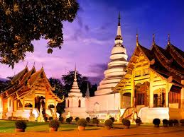
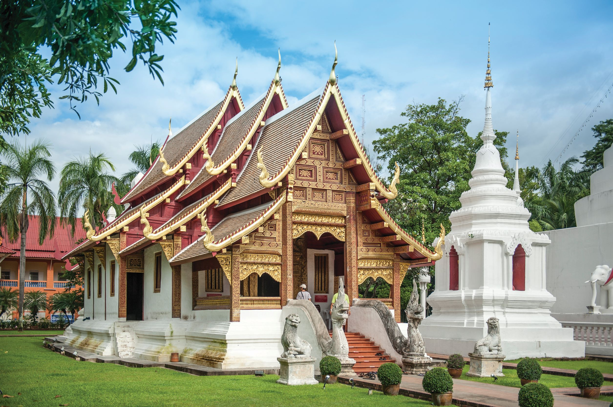
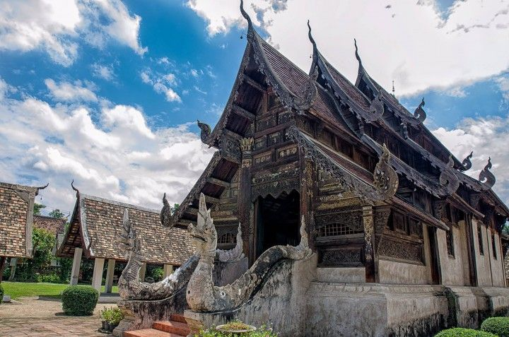
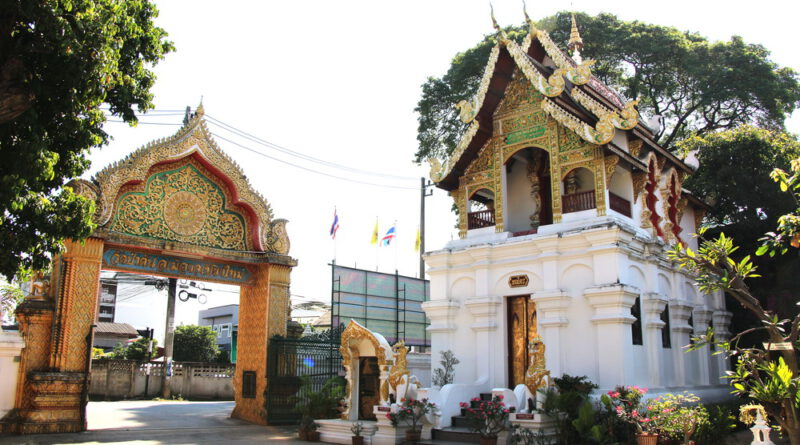

ลักษณะเด่นของสถาปัตยกรรมล้านนา
- หลังคาซ้อนชั้น - มักเป็นอาคารที่มียอดซ้อนกันหลายชั้น สื่อถึงความเชื่อเรื่องเขาพระสุเมรุ
- ช่อฟ้า ใบระกา หางหงส์ - งานประดับตกแต่งหลังคาที่มีลวดลายวิจิตรสวยงาม
- หน้าบันประดับลายฉลุ - ลวดลายประดับที่มักเป็นรูป mythical creatures หรือลายพฤกษา
- เสาและโครงสร้าง - มักใช้ไม้เป็นวัสดุหลัก โครงสร้างมั่นคงแข็งแรง
- ฮ่อม (ชายคายื่น) - ส่วนยื่นของหลังคาที่ช่วยป้องกันแดดและฝน
ตัวอย่างสถาปัตยกรรมสำคัญ




ประเภทของสถาปัตยกรรมล้านนา

สถาปัตยกรรมศาสนสถาน
วัด วัง และศาสนสถานต่างๆ ในล้านนามีรูปแบบเฉพาะตัว เช่น โบสถ์ วิหาร เจดีย์ หอไตร ที่มีลวดลายและโครงสร้างงดงาม

สถาปัตยกรรมที่อยู่อาศัย
เรือนล้านนามีลักษณะยกพื้นสูง หลังคาจั่วสูง มุงด้วยแป้นเกล็ดหรือกระเบื้องดินเผา ตัวเรือนมักทำจากไม้สัก

สถาปัตยกรรมสาธารณะ
หอคำ (วัง) คุ้มเจ้านาย หอนาค หอพระไตรปิฎก ซุ้มประตูเมือง ที่สะท้อนถึงศิลปะและวัฒนธรรมล้านนา